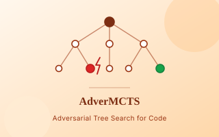
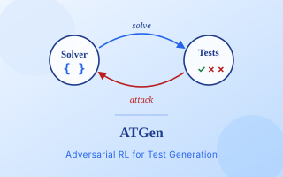
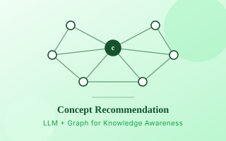
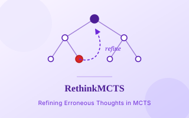
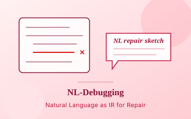
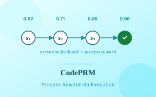
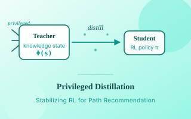
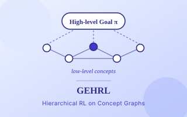
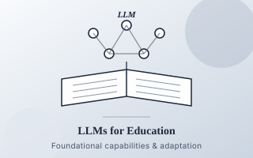

👋About
I am a Ph.D. candidate in Computer Science and Technology at Shanghai Jiao Tong
University, advised by Prof. Weinan Zhang and Prof. Yong Yu. I am also a member of
the Zhiyuan Honorary Doctoral Program.
My research focuses on large language model reasoning and code intelligence.
I develop search- and learning-based algorithms, including Monte Carlo Tree Search and
reinforcement learning, that integrate structured test-time reasoning with fine-grained
execution feedback. The goal is to make LLM-based code agents more robust on complex
programming tasks.
Previously, I worked on intelligent education, especially reinforcement learning for
learning path recommendation. That experience continues to shape how I think about
sequential decision making, optimization, and adaptive feedback.
🔥News
- Apr 2026 AdverMCTS is available as an ICML 2026 paper and arXiv preprint.
- Mar 2026 Started a research internship on agentic reinforcement learning and general agents.
- Sep 2025 Began a Ph.D. exchange at Nanyang Technological University with Prof. Bo An.
- May 2025 Received the Huawei Excellent Intern award.
🎯Research Interests
- LLM reasoning for code: test-time search, process verification, debugging, and execution feedback.
- Search and learning: MCTS, adversarial training, reinforcement learning, and model improvement from verification signals.
- Sequential decision making: reinforcement learning for adaptive recommendation and educational decision making.
📚Publications
* denotes equal contribution. Author names linked to my work are in bold.
2026

AdverMCTS: Combating Pseudo-Correctness in Code Generation via Adversarial Monte Carlo Tree Search
Qingyao Li, Weiwen Liu, Weinan Zhang, Yong Yu, Bo An
ICML 2026
Adversarial MCTS that couples code search with active vulnerability discovery to reduce pseudo-correctness.
paper
·
arXiv

ATGen: Adversarial Reinforcement Learning for Test Case Generation
Qingyao Li, Xinyi Dai, Weiwen Liu, Xiangyang Li, Yasheng Wang, Ruiming Tang, Yong Yu, Weinan Zhang
ICLR 2026
An adversarial RL framework for generating challenging tests and stronger reward signals for code models.
paper
·
arXiv

Learning Structure and Knowledge Aware Representation with Large Language Models for Concept Recommendation
Qingyao Li, Wei Xia, Kounianhua Du, Qiji Zhang, Weinan Zhang, Ruiming Tang, Yong Yu
AAMAS 2026 Extended Abstract
LLM-based concept representations with a graph-based adapter for knowledge-aware recommendation.
arXiv
2025

RethinkMCTS: Refining Erroneous Thoughts in Monte Carlo Tree Search for Code Generation
Qingyao Li, Wei Xia, Kounianhua Du, Xinyi Dai, Ruiming Tang, Yasheng Wang, Yong Yu, Weinan Zhang
EMNLP 2025
Thought-level MCTS with fine-grained execution feedback for correcting reasoning paths before code generation.
paper
·
arXiv

NL-Debugging: Exploiting Natural Language as an Intermediate Representation for Code Debugging
Weiming Zhang*, Qingyao Li*, Xinyi Dai, Jizheng Chen, Kounianhua Du, Weiwen Liu, Yasheng Wang, Ruiming Tang, Yong Yu, Weinan Zhang
EMNLP 2025
Natural language sketches as an intermediate representation for locating and repairing algorithmic flaws.
paper
·
arXiv

CodePRM: Execution Feedback-enhanced Process Reward Model for Code Generation
Qingyao Li, Xinyi Dai, Xiangyang Li, Weinan Zhang, Yasheng Wang, Ruiming Tang, Yong Yu
ACL 2025 Findings
A process reward model that uses execution feedback to score thought steps and guide generate-verify-refine search.
paper
·
ACL Anthology
2024 and Earlier

Privileged Knowledge State Distillation for Reinforcement Learning-based Educational Path Recommendation
Qingyao Li, Wei Xia, Liang Yin, Jiarui Jin, Yong Yu
KDD 2024
Privileged feature distillation for stabilizing reinforcement learning in learning path recommendation.
paper
·
ACM DL

Graph Enhanced Hierarchical Reinforcement Learning for Goal-oriented Learning Path Recommendation
Qingyao Li, Wei Xia, Li'ang Yin, Jian Shen, Renting Rui, Weinan Zhang, Xianyu Chen, Ruiming Tang, Yong Yu
CIKM 2023
Graph-enhanced hierarchical RL for decomposing learning goals and recommending concept-level learning paths.
paper
·
ACM DL

Adapting Large Language Models for Education: Foundational Capabilities, Potentials, and Challenges
Qingyao Li, Lingyue Fu, Weiming Zhang, Xianyu Chen, Jingwei Yu, Wei Xia, Weinan Zhang, Ruiming Tang, Yong Yu
Preprint
A survey of LLM capabilities and adaptation methods for education.
paper
·
arXiv
🎓Experience & Education
2026.3 – present
Research Intern, Xiaohongshu
Agentic reinforcement learning and general agent research.
2025.9 – 2026.3
Ph.D. Exchange, Nanyang Technological University
College of Computing and Data Science. Advisor: Prof. Bo An.
2024.7 – 2025.5
Student Researcher, Huawei Noah's Ark Lab
Research on LLM code generation and reinforcement learning. Mentors: Wei Xia, Xinyi Dai, Ruiming Tang.
2022.9 – present
Ph.D. Candidate, Shanghai Jiao Tong University
Computer Science and Technology, Zhiyuan Honorary Doctoral Program. Advisors: Prof. Weinan Zhang and Prof. Yong Yu.
2018.9 – 2022.8
B.S., Xi'an Jiao Tong University
Automation, Qian Xuesen Class. GPA: 4.05/4.3, ranked 1/25.
🏆Honors, Service & Patents
- Huawei Excellent Intern, 2025
- Outstanding Graduate of Xi'an Jiao Tong University, 2022
- International Excellence Award in Baidu Big Data Competition, 2020
- Conference reviewer: ICML 2026, KDD 2024, CIKM 2023, AAAI 2023
- Concept recommendation system integrating human knowledge structures, 2024
- A wireless charger for pacemakers, utility model patent, 2022